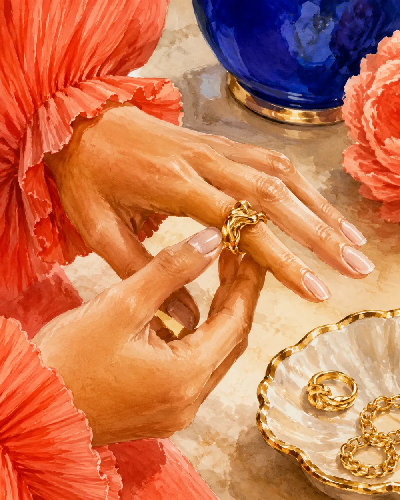

Верхняя одежда · Viršutiniai drabužiai
Во всех словарных таблицах: jis — мужской род, ji — женский, tik dgs. — только множественное число.
| Слово | Род | Мн. ч. | Русский |
|---|---|---|---|
| paltas | jis | paltai | пальто |
| striukė | ji | striukės | куртка |
| pūkinė striukė | ji | pūkinės striukės | пуховик |
| švarkas | jis | švarkai | пиджак, жакет |
| apsiaustas | jis | apsiaustai | плащ, накидка |
| lietpaltis | jis | lietpalčiai | дождевик |
| kailiniai | tik dgs. | kailiniai | шуба |
| puskailiniai | tik dgs. | puskailiniai | полушубок |
| liemenė | ji | liemenės | жилет |
| paltukas | jis | paltukai | пальтишко |
| parka | ji | parkos | парка |
| trenčkotas | jis | trenčkotai | тренч |
| kombinezonas | jis | kombinezonai | комбинезон |
| apsiaustėlis | jis | apsiaustėliai | пелерина, накидка |
Верх · Viršutinė kūno dalis
| Слово | Род | Мн. ч. | Русский |
|---|---|---|---|
| marškiniai | tik dgs. | marškiniai | рубашка |
| marškinėliai | tik dgs. | marškinėliai | футболка |
| palaidinė | ji | palaidinės | блузка |
| megztinis | jis | megztiniai | свитер |
| megztukas | jis | megztukai | кофта, джемпер |
| džemperis | jis | džemperiai | толстовка, свитшот |
| golfas | jis | golfai | водолазка |
| tunika | ji | tunikos | туника |
| bluzonas | jis | bluzonai | блузон, куртка-бомбер |
| kardiganas | jis | kardiganai | кардиган |
| berankovis | jis | berankoviai | безрукавка, майка |
| uniforma | ji | uniformos | форма, униформа |
Низ · Apatinė kūno dalis
| Слово | Род | Мн. ч. | Русский |
|---|---|---|---|
| kelnės | tik dgs. | kelnės | брюки, штаны |
| džinsai | tik dgs. | džinsai | джинсы |
| šortai | tik dgs. | šortai | шорты |
| tamprės | tik dgs. | tamprės | легинсы |
| sijonas | jis | sijonai | юбка |
| sijonėlis | jis | sijonėliai | юбочка |
| sportinės kelnės | tik dgs. | — | спортивные штаны |
| bridžai | tik dgs. | bridžai | бриджи |
| kombinezoninės kelnės | tik dgs. | — | комбинезон-штаны |
kelnės, džinsai, šortai, marškiniai, marškinėliai, akiniai, pėdkelnės, kailiniai, batai, pirštinės существуют только во множественном числе. Значит: naujos kelnės yra (не nauja kelnė), и все прилагательные при них — во множественном: juodi džinsai, šilti marškiniai. Считаются они через собирательные числительные: vienerios kelnės, dvejos kelnės, trejos pirštinės.
Цельная одежда · Vientisi drabužiai
| Слово | Род | Мн. ч. | Русский |
|---|---|---|---|
| suknelė | ji | suknelės | платье |
| sukninė | ji | sukninės | платье-рубашка |
| sarafanas | jis | sarafanai | сарафан |
| kostiumas | jis | kostiumai | костюм |
| kostiumėlis | jis | kostiumėliai | костюмчик, женский костюм |
| vestuvinė suknelė | ji | — | свадебное платье |
| vakarinė suknelė | ji | — | вечернее платье |
| tautinis kostiumas | jis | — | национальный костюм |
| apranga | ji | aprangos | одежда, экипировка (собир.) |
| drabužis | jis | drabužiai | предмет одежды |
| rūbas | jis | rūbai | одеяние (разг. и книжн.) |
| garderobas | jis | garderobai | гардероб |
Бельё, дом, сон · Apatiniai, namų ir nakties drabužiai
| Слово | Род | Мн. ч. | Русский |
|---|---|---|---|
| apatiniai | tik dgs. | apatiniai | нижнее бельё |
| kelnaitės | tik dgs. | kelnaitės | трусики |
| glaudės | tik dgs. | glaudės | плавки, трусы |
| liemenėlė | ji | liemenėlės | бюстгальтер |
| apatinukas | jis | apatinukai | комбинация, нижняя рубашка |
| kojinės | tik dgs. | kojinės | носки, чулки |
| puskojinės | tik dgs. | puskojinės | короткие носки |
| pėdkelnės | tik dgs. | pėdkelnės | колготки |
| pižama | ji | pižamos | пижама |
| naktiniai marškiniai | tik dgs. | — | ночная рубашка |
| chalatas | jis | chalatai | халат |
| šlepetės | tik dgs. | šlepetės | тапочки |
| termo apatiniai | tik dgs. | — | термобельё |
Спорт и вода · Sportas ir vanduo
| Слово | Род | Мн. ч. | Русский |
|---|---|---|---|
| sportinė apranga | ji | — | спортивная одежда |
| sportinis kostiumas | jis | sportiniai kostiumai | спортивный костюм |
| maudymosi kostiumėlis | jis | — | купальник |
| maudymosi glaudės | tik dgs. | — | плавки |
| bikinis | jis | bikiniai | бикини |
| maudymosi kepuraitė | ji | — | шапочка для плавания |
| plaukimo akiniai | tik dgs. | — | очки для плавания |
| slidinėjimo kombinezonas | jis | — | горнолыжный комбинезон |
| šalmas | jis | šalmai | шлем |
| antkeliai | tik dgs. | antkeliai | наколенники |
| sportbačiai | tik dgs. | sportbačiai | кроссовки |
Обувь · Avalynė
Собирательное слово — avalynė (ji), от того же корня au‑. Отсюда же apavas (jis) — обувь как товар, и basas — босой.
| Слово | Род | Мн. ч. | Русский |
|---|---|---|---|
| batai | tik dgs. | batai | ботинки, обувь вообще |
| bateliai | tik dgs. | bateliai | туфли (женские) |
| pusbačiai | tik dgs. | pusbačiai | полуботинки, туфли |
| auliniai batai | tik dgs. | — | сапоги |
| aulinukai | tik dgs. | aulinukai | ботильоны, полусапожки |
| ilgaauliai | tik dgs. | ilgaauliai | высокие сапоги, ботфорты |
| guminiai batai | tik dgs. | — | резиновые сапоги |
| sportbačiai | tik dgs. | sportbačiai | кроссовки |
| kedai | tik dgs. | kedai | кеды |
| basutės | tik dgs. | basutės | босоножки, сандалии |
| sandalai | tik dgs. | sandalai | сандалии |
| šlepetės | tik dgs. | šlepetės | тапочки, шлёпанцы |
| veltiniai | tik dgs. | veltiniai | валенки |
| klumpės | tik dgs. | klumpės | деревянные башмаки, клоги |
| kurpės | tik dgs. | kurpės | башмаки (устар./поэт.) |
| vyžos | tik dgs. | vyžos | лапти |
| avalynė | ji | — | обувь (собир.) |
| apavas | jis | apavai | обувь (товар) |
Части обуви
| Слово | Род | Мн. ч. | Русский |
|---|---|---|---|
| padas | jis | padai | подошва |
| kulnas | jis | kulnai | каблук, пятка |
| aulas | jis | aulai | голенище |
| liežuvėlis | jis | liežuvėliai | язычок |
| batraištis | jis | batraiščiai | шнурок |
| vidpadis | jis | vidpadžiai | стелька |
| užkulnis | jis | užkulniai | задник |
| smailianosiai | tik dgs. | — | остроносые (туфли) |
- eiti basomis / basamидти босиком
- batai spaudžiaобувь жмёт
- batai trina kulnąобувь натирает пятку
- nunešioti batusсносить обувь
- batai su aukštakulniaisобувь на высоком каблуке
- nusiauti prie durųразуться у двери
- įsispirti į šlepetesсунуть ноги в тапочки
- batų dydisразмер обуви
Головные уборы · Galvos apdangalai
| Слово | Род | Мн. ч. | Русский |
|---|---|---|---|
| kepurė | ji | kepurės | шапка, кепка |
| kepuraitė | ji | kepuraitės | шапочка |
| kepurė su snapeliu | ji | — | бейсболка, кепка с козырьком |
| skrybėlė | ji | skrybėlės | шляпа |
| beretė | ji | beretės | берет |
| ausinė kepurė | ji | — | шапка-ушанка |
| skarelė | ji | skarelės | платок |
| skara | ji | skaros | шаль, палантин |
| gobtuvas | jis | gobtuvai | капюшон |
| kaukė | ji | kaukės | маска |
| snapelis | jis | snapeliai | козырёк |
| bumbulas | jis | bumbulai | помпон |
Аксессуары · Aksesuarai
| Слово | Род | Мн. ч. | Русский |
|---|---|---|---|
| šalikas | jis | šalikai | шарф |
| kaklaskarė | ji | kaklaskarės | шейный платок, снуд |
| pirštinės | tik dgs. | pirštinės | перчатки |
| kumštinės | tik dgs. | kumštinės | варежки |
| diržas | jis | diržai | ремень, пояс |
| juosta | ji | juostos | пояс, кушак, лента |
| kaklaraištis | jis | kaklaraiščiai | галстук |
| peteliškė | ji | peteliškės | бабочка (галстук) |
| petnešos | tik dgs. | petnešos | подтяжки |
| akiniai | tik dgs. | akiniai | очки |
| akiniai nuo saulės | tik dgs. | — | солнечные очки |
| rankinė | ji | rankinės | сумка |
| kuprinė | ji | kuprinės | рюкзак |
| piniginė | ji | piniginės | кошелёк |
| laikrodis | jis | laikrodžiai | часы |
| skėtis | jis | skėčiai | зонт |
| prijuostė | ji | prijuostės | фартук |
| pirštinaitės | tik dgs. | pirštinaitės | перчаточки |
Украшения · Papuošalai

| Слово | Род | Мн. ч. | Русский |
|---|---|---|---|
| papuošalas | jis | papuošalai | украшение |
| žiedas | jis | žiedai | кольцо |
| vestuvinis žiedas | jis | — | обручальное кольцо |
| sužadėtuvių žiedas | jis | — | помолвочное кольцо |
| auskarai | tik dgs. | auskarai | серьги |
| apyrankė | ji | apyrankės | браслет |
| vėrinys | jis | vėriniai | ожерелье |
| karoliai | tik dgs. | karoliai | бусы |
| grandinėlė | ji | grandinėlės | цепочка |
| pakabukas | jis | pakabukai | кулон, подвеска |
| medalionas | jis | medalionai | медальон |
| sagė | ji | sagės | брошь |
| segtukas | jis | segtukai | заколка |
| plaukų gumytė | ji | — | резинка для волос |
| lankelis | jis | lankeliai | ободок |
| vainikas | jis | vainikai | венок |
| gintaras | jis | gintarai | янтарь |
| sidabras | jis | — | серебро |
| auksas | jis | — | золото |
| brangakmenis | jis | brangakmeniai | драгоценный камень |
gintaras — не просто камень, а национальный материал украшений: gintaro karoliai, gintarinis pakabukas, gintaro apyrankė. Прилагательное — gintarinis, ‑ė. В сочетании с tautinis kostiumas и juosta это ядро всего культурного пласта темы.
Детали и фурнитура · Drabužio dalys
Ваш принцип «разбирать предмет на части» здесь работает особенно хорошо: одна куртка даёт двадцать слов.
| Слово | Род | Мн. ч. | Русский |
|---|---|---|---|
| rankovė | ji | rankovės | рукав |
| apykaklė | ji | apykaklės | воротник |
| atlapas | jis | atlapai | лацкан, отворот |
| rankogalis | jis | rankogaliai | манжета |
| saga | ji | sagos | пуговица |
| sagos skylutė | ji | — | петля для пуговицы |
| užtrauktukas | jis | užtrauktukai | молния |
| sagtis | ji | sagtys | пряжка |
| kišenė | ji | kišenės | карман |
| klostė | ji | klostės | складка |
| pamušalas | jis | pamušalai | подкладка |
| siūlė | ji | siūlės | шов |
| siūlas | jis | siūlai | нитка |
| juosmuo | jis | juosmenys | талия, пояс изделия |
| petys | jis | pečiai | плечо |
| nėriniai | tik dgs. | nėriniai | кружево |
| kutai | tik dgs. | kutai | бахрома, кисти |
| siuvinėjimas | jis | siuvinėjimai | вышивка |
| užsegimas | jis | užsegimai | застёжка |
| lipnusis užsegimas | jis | — | липучка |
| virvutė | ji | virvutės | шнурок, завязка |
| etiketė | ji | etiketės | бирка, этикетка |
| pakaba | ji | pakabos | вешалка |
Ткани и материалы · Medžiagos
У каждой ткани есть парное прилагательное: vilna → vilnonis, oda → odinis. Это готовое упражнение на словообразование.
| Материал | Род | Прилагательное | Русский |
|---|---|---|---|
| medvilnė | ji | medvilninis, ‑ė | хлопок |
| vilna | ji | vilnonis, ‑ė | шерсть |
| šilkas | jis | šilkinis, ‑ė | шёлк |
| linas | jis | lininis, ‑ė | лён |
| oda | ji | odinis, ‑ė | кожа |
| zomša | ji | zomšinis, ‑ė | замша |
| kailis | jis | kailinis, ‑ė | мех, шкура |
| kašmyras | jis | kašmyrinis, ‑ė | кашемир |
| aksomas | jis | aksominis, ‑ė | бархат |
| veltinis | jis | veltinis, ‑ė | войлок, фетр |
| satinas | jis | satininis, ‑ė | сатин |
| atlasas | jis | atlasinis, ‑ė | атлас |
| džinsinis audinys | jis | džinsinis, ‑ė | джинсовая ткань |
| poliesteris | jis | poliesterinis, ‑ė | полиэстер |
| viskozė | ji | viskozinis, ‑ė | вискоза |
| elastanas | jis | elastinis, ‑ė | эластан |
| audinys | jis | — | ткань, полотно |
| pūkas | jis | pūkinis, ‑ė | пух |
| tinklelis | jis | — | сетка |
| dirbtinė oda | ji | — | искусственная кожа |
Узоры, цвет, фактура · Raštai ir spalvos
| Слово (jis / ji) | Русский | Пример |
|---|---|---|
| dryžuotas, ‑a | полосатый | dryžuoti marškinėliai |
| languotas, ‑a | клетчатый | languotas švarkas |
| taškuotas, ‑a | в горошек | taškuota suknelė |
| gėlėtas, ‑a | в цветочек | gėlėtas sijonas |
| raštuotas, ‑a | узорчатый | raštuotos pirštinės |
| vienspalvis, ‑ė | однотонный | vienspalvė palaidinė |
| margas, ‑a | пёстрый | marga skara |
| blizgus, ‑i | блестящий | blizgus audinys |
| matinis, ‑ė | матовый | matinė oda |
| permatomas, ‑a | прозрачный | permatoma palaidinė |
| glotnus, ‑i | гладкий | glotnus šilkas |
| šiurkštus, ‑i | грубый, шершавый | šiurkšti vilna |
| minkštas, ‑a | мягкий | minkštas megztinis |
| plonas, ‑a | тонкий | plona striukė |
| storas, ‑a | толстый | stori kailiniai |
| šviesus, ‑i | светлый | šviesios kelnės |
| tamsus, ‑i | тёмный | tamsus paltas |
| ryškus, ‑i | яркий | ryški suknelė |
| išblukęs, ‑usi | выцветший | išblukę džinsai |